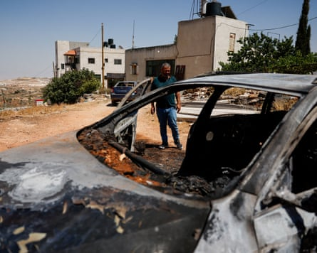
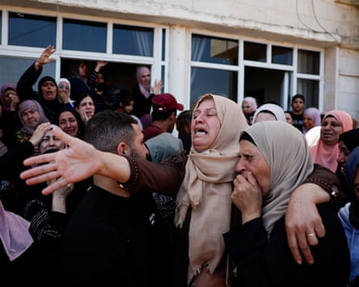

T he men from Fatah arrived on Thursday morning, hours after the attack on Kafr Malik, to put out more flags along the main streets, adding bright primary colours to a mournful scene, but they did nothing to relieve the all-encompassing sense of helplessness.
Three men from this central West Bank town, one a teenager, lay dead and several others were still in hospital after an attack by about 100 Israeli settlers on Wednesday evening. The men of Kafr Malik had run to its south-western edge to form a screen against the settlers and rescue women and children trapped in a house set alight by the masked attackers.
But as they threw stones at the settlers in an attempt to drive them back, the Israel army, who had taken up position behind the marauders, opened fire at the Palestinians.
“Their own kids are really valuable to them but other people’s kids are worthless,” said Mohammed Sabry, his eyes swollen from a night of weeping. His 18-year-old son, Lutfi, was one of the dead.
“There is no justification whatsoever to shed the blood of the Palestinian people like this,” Sabry said. “They attack us without provocation, and when the young people go to defend women and children, they are shot by the army. The bitter truth is that the world is watching the bloodshed of the Palestinian people without doing anything about it.”
Afi Hamayel has the misfortune to own a house on the south-east edge of town and it took the brunt of the settler attack. “They threw petrol bombs into my car and then through the window into the house,” Hayamel said as friends helped him remove charred personal effects from the house.
A burnt car after the attack by Israeli settlers in Kafr Malik.Photograph: Ammar Awad/Reuters
Hamayel’s extended family, including his own six children – 20 people altogether – had taken shelter in the house as the attack began. When it began to burn, a neighbour ran down the hillside to help them escape.
“He was helping me evacuate the children. He took them to his house and he was coming back when the army shot him in the head,” he said. The neighbour, 35, was listed as one of the three killed on Wednesday.
The settlers sprayed a black message on the wall around Afi Hamayel’s house, declaring the attack to be revenge for the killing two years ago of two settlers in Eli, a settlement about 9 miles (15km) to the north.
The Israel Defense Forces (IDF) claimed they came under fire from the direction of Kafr Malik on Wednesday night. But that was adamantly denied by residents, the IDF produced no evidence, and there were no reports of any injuries among the settler assailants.
Five settlers who took part in the attack were detained. According to press reports and human rights activists, they were released without charge early on Thursday morning.
In Kafr Malik, a billowing brown and black tent was erected alongside the central mosque for the wake, with long lines of green plastic chairs lined up for the mourners, who arrived on foot from all corners of the town.
Palestinian flags hung along the surrounding streets alongside the yellow banner of Fatah, the main faction of the Palestine Liberation Organisation. It was an exercise in branding, showing Kafr Malik’s continuing loyalty, despite the attacks, to the Palestinian Authority (PA), in which Fatah is the dominant force. It signalled that this town, at least, had not gone over to Hamas .
The Fatah banner is emblazoned with motifs of its past resistance, crossed assault rifles over a grenade, but the defiant symbolism was drained of meaning long ago.
Kafr Malik is about 8 miles north-east of Ramallah, the seat of the PA, but it lies in Area B, which means the PA is supposed to provide civil governance while the IDF is responsible for security. Palestinian police have no jurisdiction there. Even in Area A, where they are in charge, they do nothing to protect Palestinians from outside attack.
More and more over recent years, it has become open season on Palestinians in the West Bank , who have been killed with impunity. Through the Gaza war, the Lebanon war and now the Iran war, the death toll among Palestinians on the West Bank keeps grinding upwards, in a concerted campaign to drive them off their land. Since the start of the Gaza conflict, the UN says , 943 Palestinians have been killed by settlers or security forces, more than 140 of them this year.
Mourners during the funeral in Kafr Malik on Thursday.Photograph: Ammar Awad/Reuters
It was the second time the mourning tent had been put up in Kafr Malik this week. On Monday a 13-year-old boy, Ammar Hamayel, was shot dead by Israeli soldiers while out with his brother in the olive groves on the south side of town. He was the 29th child shot dead by Israeli forces in the West Bank this year, according to the Palestinian health ministry.
After the killing, the IDF put out a statement saying the boys had been throwing stones in the direction of a patrol, referring to them as “terrorists” and presenting it as a justification for shooting them dead using assault rifles.
Afi Hamayel is a relative of the dead boy, part of the same large clan. He said the brothers had been out trapping birds with nets set up between trees. Hamayel is a father of four girls and two boys, and these days he does not let them go beyond the garden fence.
The view from the family house looks over the Jordan valley to the distant high plateau of the Hashemite Kingdom of Jordan on the east bank. The rocky hillside below their home is covered with olive groves that Hayamel and other townspeople no longer dare to tend, for fear of being picked off by the settlers or an army sniper.
The tall antennas of an IDF base can be seen on the neighbouring hill overlooking the town, and a new settler outpost has sprung up alongside the base in the past two weeks, local residents said. An outpost is a settlement established without official authorisation, though under the current, settler-dominated Israeli coalition, outposts generally receive retrospective endorsement. The settlers receive army protection from the moment they arrive.
The world around Kafr Malik keeps shrinking. Last year, shepherds from the town were ambushed by settlers and their flocks were stolen. Now their olives are out of reach too. It is a commonplace tale across the West Bank.
“This is what ethnic cleansing looks like,” the human rights group Yesh Din said in a statement after Wednesday night’s attack. “Under the protection of government and military backing, settler violence in the West Bank continues and is becoming deadlier by the day.”